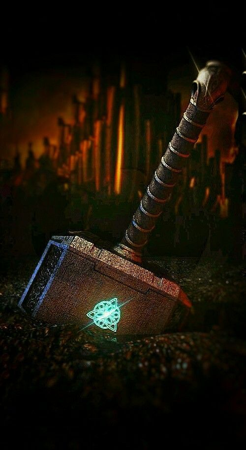
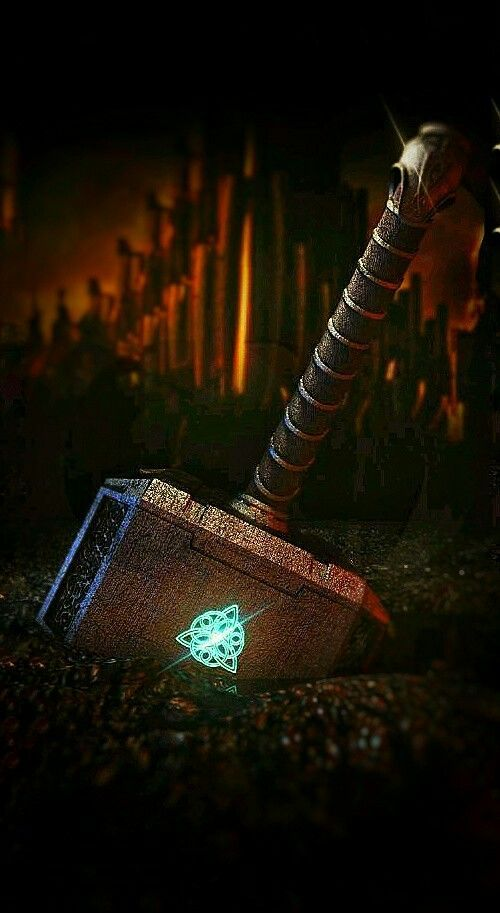
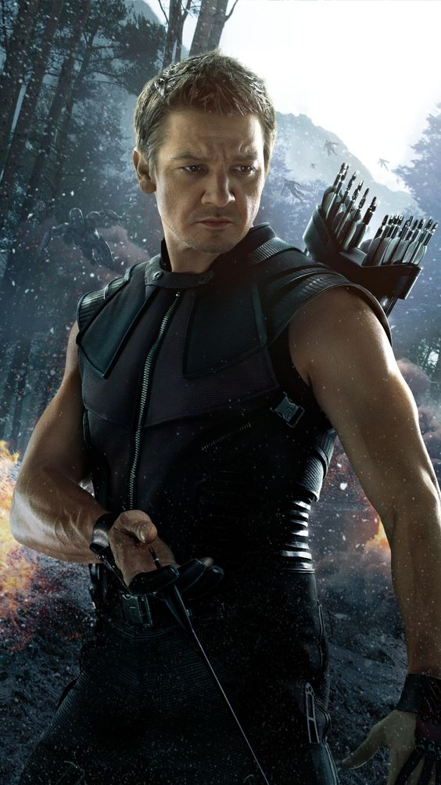
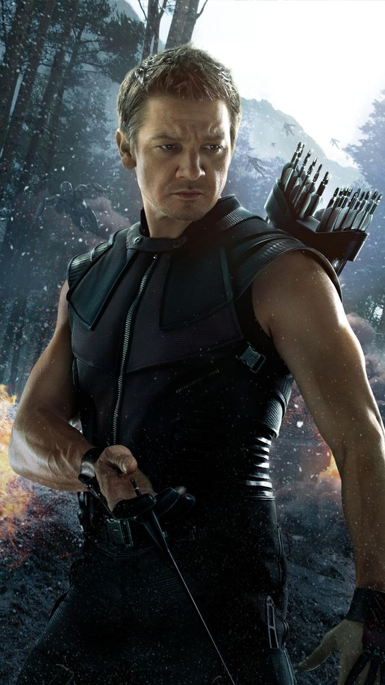

MARVEL
CINEMATICS
UNIVERSE
 



 


What Happened To Captain America On Vormir
In one of the closing scenes of Avengers: Endgame, [Captain America] takes on the task of returning [the Infinity Stones] to the alternate timeline visited during the film's time heist. While there are likely multiple significant events on this journey, one event had to be interesting.